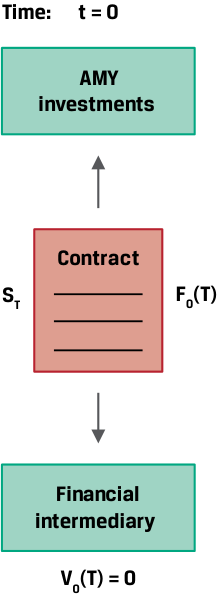
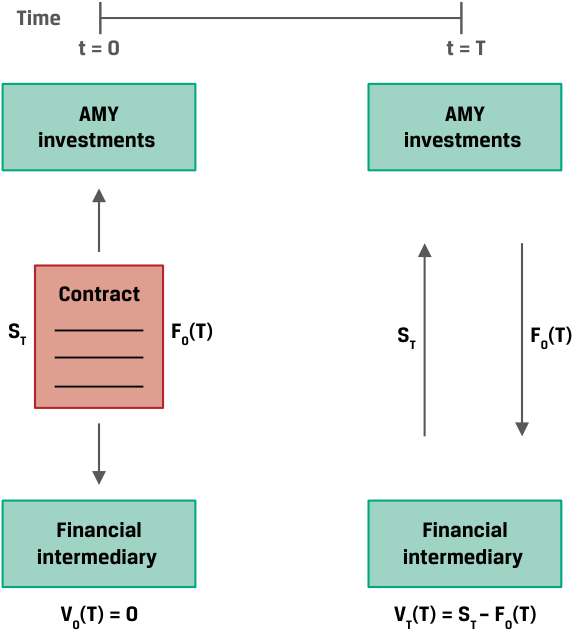
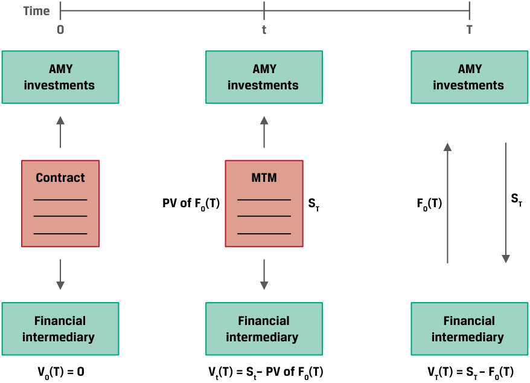
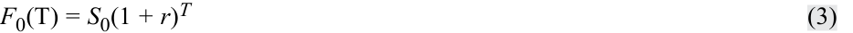
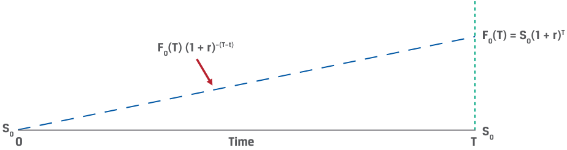
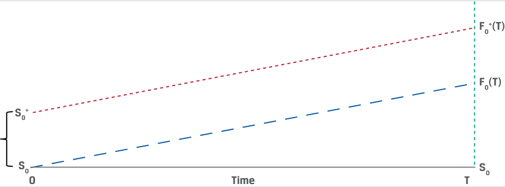
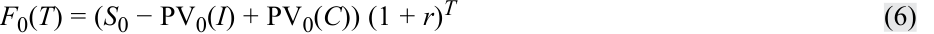
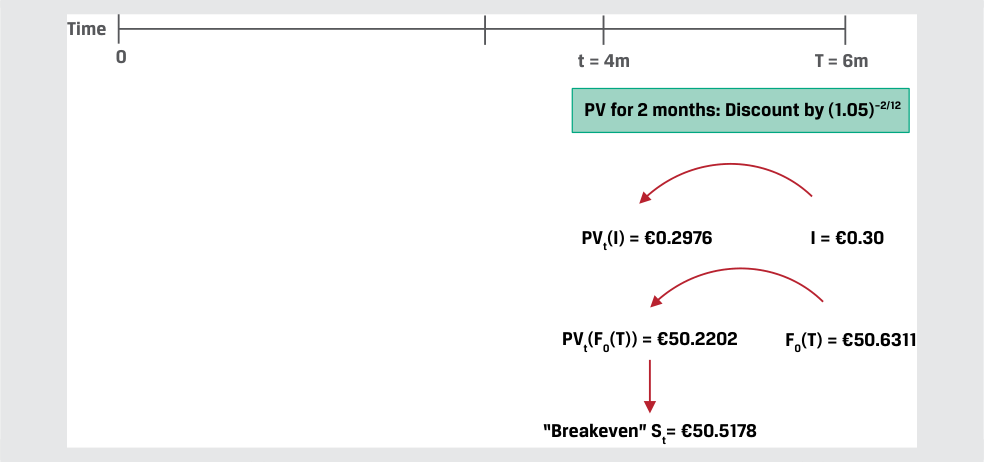
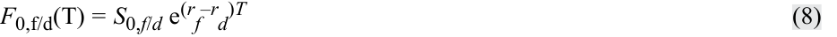
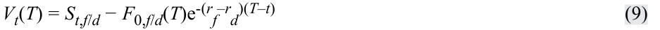

Learning Module 5 Pricing and Valuation of Forward Contracts and for an Underlying with Varying Maturities - Part 1: Introduction
Volume 7: Derivatives
Learning Module 5 Pricing and Valuation of Forward Contracts and for an Underlying with Varying Maturities
Part 1/2: Introduction (PDF Pages 107–120)
Tập 7: Công cụ Phái sinh (Derivatives)
Học phần 5: Định giá và Xác định Giá trị Hợp đồng Kỳ hạn và đối với Tài sản Cơ sở có Kỳ hạn Khác nhau (Pricing and Valuation of Forward Contracts and for an Underlying with Varying Maturities)
Phần 1/2: Giới thiệu (Introduction) (Trang PDF 107–120)
L E A R N I N G M O D U L E
H Ọ C P H Ầ N
5
5
Pricing and Valuation of Forward Contracts and for an Underlying with Varying Maturities
Định giá và Xác định Giá trị Hợp đồng Kỳ hạn và đối với Tài sản Cơ sở có Kỳ hạn Khác nhau (Pricing and Valuation of Forward Contracts and for an Underlying with Varying Maturities)
LEARNING OUTCOMES
MỤC TIÊU HỌC TẬP (LEARNING OUTCOMES)
| Mastery The candidate should be able to: |
|---|
explain how the value and price of a forward contract are determined at initiation, during the life of the contract, and at expiration explain how forward rates are determined for interest rate forward contracts and describe the uses of these forward rates.
| _Mức độ Thành thạo (Mastery)_ Ứng viên cần có khả năng: |
|---|
| Giải thích cách thức giá trị (value) và mức giá (price) của một hợp đồng kỳ hạn được xác định tại thời điểm khởi tạo (at initiation), trong suốt vòng đời của hợp đồng (during the life of the contract), và tại thời điểm đáo hạn (at expiration). |
| Giải thích cách thức lãi suất kỳ hạn (forward rates) được xác định đối với các hợp đồng kỳ hạn lãi suất (interest rate forward contracts) và mô tả các ứng dụng của những lãi suất kỳ hạn này. |
INTRODUCTION
GIỚI THIỆU (INTRODUCTION)
1
1
Earlier lessons introduced forward commitment features, payoff profiles, and concepts used in pricing these derivative instruments. In particular, the relationship between spot and forward commitment prices was established as the opportunity cost of owning the underlying asset (represented by the risk-free rate) as well as any additional cost or benefit associated with holding the underlying asset. This price relationship both prevents arbitrage and allows a forward commitment to be replicated using spot market transactions and risk-free borrowing or lending.
Các bài học trước đã giới thiệu những đặc điểm của cam kết kỳ hạn (forward commitments), cấu trúc lợi nhuận khi đáo hạn (payoff profiles), và các khái niệm được sử dụng trong việc định giá những công cụ phái sinh này. Cụ thể, mối quan hệ giữa giá giao ngay và giá cam kết kỳ hạn đã được xác lập chính là chi phí cơ hội của việc sở hữu tài sản cơ sở (được đại diện bởi lãi suất phi rủi ro) cũng như bất kỳ chi phí hoặc lợi ích bổ sung nào gắn liền với việc nắm giữ tài sản cơ sở đó. Mối quan hệ giá này vừa ngăn chặn hoạt động kinh doanh chênh lệch giá (arbitrage) vừa cho phép một cam kết kỳ hạn được mô phỏng (replicated) bằng cách sử dụng các giao dịch trên thị trường giao ngay kết hợp với việc đi vay hoặc cho vay phi rủi ro.
In the first lesson, we explore the pricing and valuation of forward commitments on a mark-to-market basis from inception through maturity. This analysis is essential for issuers, investors, and financial intermediaries alike to assess the value of any asset or liability portfolio that includes these instruments. The second lesson addresses forward pricing for the special case of underlying assets with different maturities such as interest rates, credit spreads, and volatility. The prices of these forward commitments across the so-called term structure are an important building block for pricing swaps and related instruments in later lessons.
Trong bài học đầu tiên, chúng ta khám phá việc định giá (pricing) và xác định giá trị (valuation) của các cam kết kỳ hạn trên cơ sở định giá theo thị trường (mark-to-market – MTM) kể từ khi khởi tạo cho đến khi đáo hạn. Phân tích này đóng vai trò thiết yếu đối với cả các tổ chức phát hành, nhà đầu tư cũng như các định chế tài chính trung gian nhằm đánh giá giá trị của bất kỳ danh mục tài sản hay nợ phải trả nào có bao gồm những công cụ này. Bài học thứ hai đề cập đến việc định giá kỳ hạn đối với trường hợp đặc biệt của các tài sản cơ sở có những kỳ hạn khác nhau chẳng hạn như lãi suất (interest rates), chênh lệch tín dụng (credit spreads), và độ biến động (volatility). Mức giá của những cam kết kỳ hạn này xuyên suốt cái gọi là cấu trúc kỳ hạn (term structure) là một cấu phần nền tảng quan trọng để định giá hợp đồng hoán đổi (swaps) và các công cụ liên quan trong những bài học sau.
LEARNING MODULE OVERVIEW
TỔNG QUAN HỌC PHẦN (LEARNING MODULE OVERVIEW)
-
A forward commitment price agreed upon at contract inception remains fixed and establishes the basis on which the underlying asset (or cash) will be exchanged in the future versus the spot price at maturity.
-
For an underlying asset that does not generate cash flows, the value of a long forward commitment prior to expiration equals the current spot price of the underlying asset minus the present value of the forward price discounted at the risk-free rate. The reverse is true for a short forward commitment. Foreign exchange represents a special case in which the spot versus forward price is a function of the difference between risk-free rates across currencies.
-
For an underlying asset with additional costs and benefits, the forward contract mark-to-market (MTM) value is adjusted by the sum of the present values of all additional cash flows through maturity.
-
Underlying assets with a term structure, such as interest rates, have different rates or prices for different times-to-maturity. These zero or spot and forward rates are derived from coupon bonds and market reference rates and establish the building blocks of interest rate derivatives pricing.
-
Implied forward rates represent a breakeven reinvestment rate linking short-dated and long-dated zero-coupon bonds over a specific period.
-
■ A forward rate agreement (FRA) is a contract in which counterparties agree to apply a specific interest rate to a future period.
-
Mức giá cam kết kỳ hạn được thỏa thuận tại thời điểm khởi tạo hợp đồng sẽ giữ nguyên cố định và thiết lập cơ sở mà dựa vào đó tài sản cơ sở (hoặc tiền mặt) sẽ được trao đổi trong tương lai so với mức giá giao ngay tại ngày đáo hạn.
-
Đối với một tài sản cơ sở không tạo ra dòng tiền, giá trị của một cam kết mua kỳ hạn (long forward commitment) trước khi đáo hạn bằng mức giá giao ngay hiện tại của tài sản cơ sở trừ đi giá trị hiện tại của mức giá kỳ hạn được chiết khấu theo lãi suất phi rủi ro. Điều ngược lại áp dụng cho một cam kết bán kỳ hạn (short forward commitment). Ngoại hối đại diện cho một trường hợp đặc biệt trong đó giá giao ngay so với giá kỳ hạn là một hàm số phụ thuộc vào mức chênh lệch (difference) giữa lãi suất phi rủi ro của các đồng tiền.
-
Đối với một tài sản cơ sở có thêm các chi phí và lợi ích, giá trị định giá theo thị trường (mark-to-market – MTM) của hợp đồng kỳ hạn được điều chỉnh bằng tổng giá trị hiện tại của tất cả các dòng tiền bổ sung cho đến ngày đáo hạn.
-
Các tài sản cơ sở có cấu trúc kỳ hạn (term structure), chẳng hạn như lãi suất, có các mức lãi suất hoặc mức giá khác nhau cho các khoảng thời gian đến khi đáo hạn khác nhau. Những lãi suất không trả lãi định kỳ (zero rates) hay lãi suất giao ngay (spot rates) và lãi suất kỳ hạn (forward rates) này được suy ra từ các trái phiếu trả lãi định kỳ (coupon bonds) cùng các lãi suất tham chiếu thị trường (market reference rates) và thiết lập nên các cấu phần nền tảng cho việc định giá công cụ phái sinh lãi suất.
-
Lãi suất kỳ hạn ngầm định (implied forward rates) đại diện cho mức lãi suất tái đầu tư hòa vốn (breakeven reinvestment rate) liên kết các trái phiếu không trả lãi định kỳ ngắn hạn và dài hạn trong một khoảng thời gian cụ thể.
-
Hợp đồng kỳ hạn lãi suất (forward rate agreement – FRA) là một hợp đồng trong đó các đối tác đồng ý áp dụng một mức lãi suất cụ thể cho một kỳ trong tương lai.
LEARNING MODULE SELF-ASSESSMENT
TỰ ĐÁNH GIÁ HỌC PHẦN (LEARNING MODULE SELF-ASSESSMENT)
These initial questions are intended to help you gauge your current level of understanding of this learning module.
Các câu hỏi ban đầu này nhằm mục đích giúp bạn tự đánh giá mức độ hiểu biết hiện tại của mình về học phần này.
- Match the following situations with their corresponding forward contract valuation for an asset with no additional costs or benefits.
- Hãy ghép nối các tình huống sau đây với phần xác định giá trị hợp đồng kỳ hạn tương ứng của chúng đối với một tài sản không có thêm chi phí hay lợi ích nào.
| 1. At time_t_= 0, the spot price of the underlying asset rises instanta- neously and other market parame- ters remain unchanged. |
A. The forward contract buyer has an MTM gain. |
|---|---|
| 2. At time_t_, the present value of the forward price discounted at the risk-free rate (r) equals the current spotprice (St). |
B. The forward contract seller has an MTM gain. |
| 3. At time_T_, the forward contract price,F_0(_T), is greater than the cur- rent spotprice,ST. |
C. The MTM value of the forward con- tract is zero. |
| Tình huống | Xác định giá trị hợp đồng kỳ hạn |
|---|---|
| 1. Tại thời điểm $t = 0$, giá giao ngay của tài sản cơ sở tăng lên tức thời và các tham số thị trường khác giữ nguyên không đổi. | A. Bên mua hợp đồng kỳ hạn có một khoản lãi MTM (MTM gain). |
| 2. Tại thời điểm $t$, giá trị hiện tại của mức giá kỳ hạn được chiết khấu theo lãi suất phi rủi ro ($r$) bằng với mức giá giao ngay hiện tại ($S_t$). | B. Bên bán hợp đồng kỳ hạn có một khoản lãi MTM (MTM gain). |
| 3. Tại thời điểm $T$, mức giá của hợp đồng kỳ hạn, $F_0(T)$, lớn hơn mức giá giao ngay hiện tại, $S_T$. | C. Giá trị MTM của hợp đồng kỳ hạn bằng không. |
Solution:
Lời giải:
- A is correct. In order to satisfy the no-arbitrage condition, the original spot price, S 0 at t = 0, must equal the present value of the forward price discounted at the risk-free rate, r . An immediate increase in the spot price to S 0+ > S 0 results in an MTM gain for the forward buyer.
- A là đáp án đúng. Để thỏa mãn điều kiện không có kinh doanh chênh lệch giá, mức giá giao ngay ban đầu, $S_0$ tại thời điểm $t = 0$, phải bằng giá trị hiện tại của mức giá kỳ hạn được chiết khấu theo lãi suất phi rủi ro, $r$. Sự gia tăng tức thời của giá giao ngay lên mức $S_0^+ > S_0$ dẫn đến một khoản lãi MTM cho bên mua kỳ hạn.
| 2. C is correct. At any time_t_, the MTM value,Vt(T), is equal to the differ- ence between the current spot price,St, and the present value of the forward price discounted at the risk-free rate,r, or_F_0(T)(1 +r)-(T-t). When_St_=F_0(_T) (1 +r)-(T-t), then_Vt_(T) = 0. 3. B is correct. The MTM value to the forward contract seller upon settle- ment at time_T_is equal to the settlement value of_F_0(T) −ST. |
|---|
| 2. An increase in the risk-free rate, r, following the inception of a forward con- tract will cause which of the following to the forward contract’s MTM value to the forward seller if other parameters remain unchanged. |
| A.The forward contract’s MTM value to the forward seller will be unchanged. |
| B.The forward contract’s MTM value to the forward seller will increase. |
| h C.The forward contract’s MTM value to the forward seller will decrease. Solution: |
| C is correct. The mark-to-market value from the forward seller’s perspective is equal to Vt(T) in the following equation: Vt(T) =F_0(_T)(1 +r)–(T–t)−St. |
| An increase in the risk-free rate, r, following the inception of a forward con- tract will cause the present value of the forward price, F0(T), to fall, and this will reduce the MTM value from the contract seller’s perspective. |
| 3. Which of the following is closest to the two-year zero rate given a 3% annual coupon bond priced at 99 per 100 face value if a one-year annual coupon bond from the same issuer has a yield-to-maturity of 2.50%? |
| A.3.5266% B.3.5000% C.3.5422% Solution: |
| C is correct. The yield-to-maturity and the zero rate for a bond with a single cash flow at maturity in one period are identical, so the one-year zero rate, z1, equals 2.50%. Solve for the two-year zero rate (z2) in the following equation: 99 = 3/1.025 + 103/(1 +z_2)2. Solve for_z_2to get 3.5422%. A is incorrect because 3.5266% is the internal rate of return (IRR) solved for cash flows of –99 at_t= 0, 3 at_t_= 1, and 103 at_t_= 2. This response assumes a flat term structure, which is not a correct assumption given the question. B is incorrect because this response implies that we can find the correct answer by assuming the coupon rate is the sim- ple average of the one- and two-year zero rates. |
| 4. Which of the following is a correct description of a 2y3y forward rate? |
| A.The implied two-year rate beginning three years in the future. |
| h B.The implied three-year rate beginning two years in the future. |
| h C.The implied one-year rate beginning two years in the future. Solution: |
| B is correct. In the terminology of forward rates, the first number reflects the point in time when a forward rate begins; thus, the forward rate stated above reflects a rate startingtwoyears in the future. The second number |
-
C là đáp án đúng. Tại bất kỳ thời điểm $t$ nào, giá trị MTM, $V_t(T)$, bằng phần chênh lệch giữa giá giao ngay hiện tại, $S_t$, và giá trị hiện tại của mức giá kỳ hạn được chiết khấu theo lãi suất phi rủi ro, $r$, hay $F_0(T)(1 + r)^{-(T-t)}$. Khi $S_t = F_0(T)(1 + r)^{-(T-t)}$, thì $V_t(T) = 0$.
-
B là đáp án đúng. Giá trị MTM đối với bên bán hợp đồng kỳ hạn khi tất toán tại thời điểm $T$ bằng với giá trị thanh toán là $F_0(T) - S_T$ (vì $F_0(T) > S_T$ nên bên bán có lãi MTM dương).
-
Sự gia tăng của lãi suất phi rủi ro, $r$, sau thời điểm khởi tạo của một hợp đồng kỳ hạn sẽ gây ra điều nào sau đây đối với giá trị MTM của hợp đồng kỳ hạn xét dưới góc độ của bên bán kỳ hạn nếu các tham số khác giữ nguyên không đổi? - A. Giá trị MTM của hợp đồng kỳ hạn đối với bên bán kỳ hạn sẽ không thay đổi. - B. Giá trị MTM của hợp đồng kỳ hạn đối với bên bán kỳ hạn sẽ tăng lên. - C. Giá trị MTM của hợp đồng kỳ hạn đối với bên bán kỳ hạn sẽ giảm xuống.
Lời giải: C là đáp án đúng. Giá trị định giá theo thị trường (mark-to-market) xét dưới góc độ của bên bán kỳ hạn bằng $V_t(T)$ trong phương trình sau đây:
- Giá trị nào sau đây gần nhất với mức lãi suất không trả lãi định kỳ kỳ hạn hai năm (two-year zero rate) khi biết một trái phiếu trả lãi hàng năm $3\%$ được định giá ở mức $99$ trên $100$ mệnh giá, nếu một trái phiếu trả lãi hàng năm kỳ hạn một năm của cùng tổ chức phát hành có lợi suất đáo hạn (yield-to-maturity) là $2.50\%$? - A. $3.5266\%$ - B. $3.5000\%$ - C. $3.5422\%$
Lời giải: C là đáp án đúng. Lợi suất đáo hạn và lãi suất zero đối với một trái phiếu chỉ có một dòng tiền duy nhất khi đáo hạn sau một kỳ là hoàn toàn giống nhau, vì vậy lãi suất zero một năm, $z_1$, bằng $2.50\%$. Giải tìm lãi suất zero hai năm ($z_2$) trong phương trình sau đây:
- Phát biểu nào sau đây là mô tả đúng về lãi suất kỳ hạn
2y3y(2y3y forward rate)? - A. Lãi suất hai năm ngầm định bắt đầu sau ba năm nữa tính từ hiện tại. - B. Lãi suất ba năm ngầm định bắt đầu sau hai năm nữa tính từ hiện tại. - C. Lãi suất một năm ngầm định bắt đầu sau hai năm nữa tính từ hiện tại.
Lời giải: B là đáp án đúng. Trong thuật ngữ về lãi suất kỳ hạn, con số đầu tiên phản ánh mốc thời gian mà tại đó lãi suất kỳ hạn bắt đầu có hiệu lực; do đó, lãi suất kỳ hạn nêu trên phản ánh một mức lãi suất bắt đầu sau hai năm nữa tính từ hiện tại. Con số thứ hai
reflects the maturity of the rate. Thus, the 2y3y forward rate reflects a threeyear rate starting in two years. A is incorrect because this is the description of the 3y2y forward rate. C is incorrect because this is the description of the 2y1y rate.
phản ánh kỳ hạn (maturity/tenor) của mức lãi suất đó. Vì vậy, lãi suất kỳ hạn 2y3y phản ánh một mức lãi suất kỳ hạn ba năm bắt đầu sau hai năm nữa. A không đúng vì đây là mô tả của lãi suất kỳ hạn 3y2y. C không đúng vì đây là mô tả của lãi suất kỳ hạn 2y1y.
2
2
PRICING AND VALUATION OF FORWARD CONTRACTS
ĐỊNH GIÁ VÀ XÁC ĐỊNH GIÁ TRỊ CỦA HỢP ĐỒNG KỲ HẠN (PRICING AND VALUATION OF FORWARD CONTRACTS)
explain how the value and price of a forward contract are determined at initiation, during the life of the contract, and at expiration
Giải thích cách thức giá trị và mức giá của một hợp đồng kỳ hạn được xác định tại thời điểm khởi tạo, trong suốt vòng đời của hợp đồng, và tại thời điểm đáo hạn.
Pricing versus Valuation of Forward Contracts
Định giá so với Xác định Giá trị của Hợp đồng Kỳ hạn (Pricing versus Valuation of Forward Contracts)
When counterparties enter into forward, futures, or swap contracts with one another, these contracts have an initial value of zero (ignoring trading and transaction costs as well as counterparty credit exposure). While forward commitments require no cash outlay at inception, their price incorporates the opportunity cost of a long cash position as measured by the risk-free rate. The forward price or forward rate established at inception remains fixed and determines the basis on which the underlying asset (or cash) will be exchanged in the future versus the spot price at maturity.
Khi các đối tác tham gia vào hợp đồng kỳ hạn (forward), hợp đồng tương lai (futures), hoặc hợp đồng hoán đổi (swap) với nhau, những hợp đồng này có giá trị ban đầu bằng không (nếu bỏ qua chi phí giao dịch cũng như rủi ro tín dụng đối tác). Mặc dù các cam kết kỳ hạn không đòi hỏi phải chi trả tiền mặt ngay khi khởi tạo, nhưng mức giá của chúng kết hợp cả chi phí cơ hội của một vị thế mua bằng tiền mặt được đo lường bởi lãi suất phi rủi ro. Giá kỳ hạn (forward price) hoặc lãi suất kỳ hạn (forward rate) được thiết lập khi khởi tạo sẽ giữ nguyên cố định và quyết định cơ sở mà dựa vào đó tài sản cơ sở (hoặc tiền mặt) sẽ được trao đổi trong tương lai so với mức giá giao ngay tại ngày đáo hạn.
As time passes and/or the underlying asset spot price and other parameters change, the value of a forward contract changes. This mark-to-market value of a contract reflects the change in the underlying price and other factors that would result in a gain or loss to a counterparty if the forward contract were to be settled immediately. The MTM gain of the forward seller will equal the MTM loss of the forward buyer and vice versa. Recall that a key difference between exchange-traded futures and over-the-counter forwards is that the futures clearinghouse settles these MTM changes in cash on a daily basis, while forward contract settlement typically occurs at maturity.
Khi thời gian trôi qua và/hoặc giá giao ngay của tài sản cơ sở cùng các tham số khác thay đổi, giá trị (value) của hợp đồng kỳ hạn sẽ thay đổi theo. Giá trị định giá theo thị trường (mark-to-market value – MTM) này của một hợp đồng phản ánh sự thay đổi trong giá tài sản cơ sở và các yếu tố khác mà sẽ dẫn đến một khoản lãi hoặc lỗ cho một đối tác nếu hợp đồng kỳ hạn đó được tất toán ngay lập tức. Khoản lãi MTM của bên bán kỳ hạn sẽ bằng đúng khoản lỗ MTM của bên mua kỳ hạn và ngược lại. Hãy nhớ lại rằng sự khác biệt cốt lõi giữa hợp đồng tương lai giao dịch trên sàn (exchange-traded futures) và hợp đồng kỳ hạn phi tập trung (over-the-counter forwards) là trung tâm thanh toán bù trừ hợp đồng tương lai sẽ tất toán những thay đổi MTM này bằng tiền mặt hàng ngày, trong khi việc thanh toán hợp đồng kỳ hạn thường chỉ diễn ra vào ngày đáo hạn.
Pricing and Valuation of Forward Contracts at Initiation
Định giá và Xác định Giá trị Hợp đồng Kỳ hạn tại Thời điểm Khởi tạo (Pricing and Valuation of Forward Contracts at Initiation)
The prior learning module established that a forward contract agreed at time t = 0 occurs at a forward price, F 0( T ), that satisfies no-arbitrage conditions for the underlying spot price ( S 0), the risk-free rate of return ( r ), and any additional costs or benefits associated with underlying asset ownership until the forward contract matures at time T . In an earlier example, AMY Investments agreed to purchase 1,000 Airbus (AIR) shares trading at the spot price ( ST ) at maturity at an agreed upon forward price, F 0( T ), of EUR30 per share, as shown in Exhibit 1.
Học phần trước đã xác lập rằng một hợp đồng kỳ hạn được ký kết tại thời điểm $t = 0$ diễn ra tại một mức giá kỳ hạn, $F_0(T)$, thỏa mãn các điều kiện không có kinh doanh chênh lệch giá đối với giá giao ngay của tài sản cơ sở ($S_0$), tỷ suất sinh lợi phi rủi ro ($r$), và bất kỳ chi phí hay lợi ích bổ sung nào gắn liền với quyền sở hữu tài sản cơ sở cho đến khi hợp đồng kỳ hạn đáo hạn tại thời điểm $T$. Trong một ví dụ trước, AMY Investments đã đồng ý mua $1,000$ cổ phiếu Airbus (AIR) giao dịch tại mức giá giao ngay ($S_T$) vào ngày đáo hạn với mức giá kỳ hạn đã thỏa thuận trước, $F_0(T)$, là $\text{EUR}30$ mỗi cổ phiếu, như được thể hiện trong Bảng minh họa 1.
Exhibit 1: Forward Contract Value at Initiation
Bảng minh họa 1: Giá trị Hợp đồng Kỳ hạn tại Thời điểm Khởi tạo (Forward Contract Value at Initiation)

Chú thích hình ảnh: Tại thời điểm $t = 0$: AMY Investments ký Hợp đồng (Contract) với Định chế tài chính trung gian (Financial intermediary) nhận $S_T$ và trả $F_0(T)$. Giá trị khởi tạo: $V_0(T) = 0$.
If we assume S 0 = EUR29.70, r = 1.00% and T is one year, F 0( T ) of EUR30 satisfies the no-arbitrage condition at t = 0 (ignoring transaction costs). The forward contract is neither an asset nor a liability to AMY Investments (the buyer) or the financial intermediary (the seller) and therefore has a value of zero to both parties:
V 0( T ) = 0
Nếu chúng ta giả sử $S_0 = \text{EUR}29.70$, $r = 1.00\%$ và $T$ là một năm, thì mức $F_0(T)$ bằng $\text{EUR}30$ thỏa mãn điều kiện không có kinh doanh chênh lệch giá tại thời điểm $t = 0$ (bỏ qua chi phí giao dịch). Hợp đồng kỳ hạn này không phải là một tài sản cũng không phải là một khoản nợ phải trả đối với AMY Investments (bên mua) hay định chế tài chính trung gian (bên bán) và do đó có giá trị bằng không đối với cả hai bên:
~~(1)~~
Pricing and Valuation of Forward Contracts at Maturity
Định giá và Xác định Giá trị Hợp đồng Kỳ hạn tại Thời điểm Đáo hạn (Pricing and Valuation of Forward Contracts at Maturity)
Recall from an earlier lesson that a forward commitment has a symmetric payoff profile. That is, at time T a forward contract is settled based on the difference between the forward price, F 0( T ), and the underlying spot price, ST , or ST − F 0( T ), from the buyer’s perspective, as shown in Exhibit 2.
Hãy nhớ lại từ bài học trước rằng một cam kết kỳ hạn có cấu trúc lợi nhuận đối xứng. Nghĩa là, tại thời điểm $T$, một hợp đồng kỳ hạn được tất toán dựa trên phần chênh lệch giữa giá kỳ hạn, $F_0(T)$, và giá giao ngay của tài sản cơ sở, $S_T$, hay $S_T - F_0(T)$, xét dưới góc độ của bên mua, như được thể hiện trong Bảng minh họa 2.
Exhibit 2: Forward Contract Value at Maturity
Bảng minh họa 2: Giá trị Hợp đồng Kỳ hạn tại Thời điểm Đáo hạn (Forward Contract Value at Maturity)

Chú thích hình ảnh: - Thời điểm $t = 0$: AMY Investments ký hợp đồng với Định chế tài chính trung gian (nhận $S_T$, trả $F_0(T)$) $\rightarrow$ $V_0(T) = 0$. - Thời điểm $t = T$: AMY Investments nhận giá trị thanh toán $S_T$ và trả $F_0(T)$ cho Định chế tài chính trung gian $\rightarrow$ $V_T(T) = S_T - F_0(T)$.
| Outcome | VT(T) (long position) | VT(T) (short position) |
|---|---|---|
| ST>F_0(_T) | ST−F_0(_T) > 0 | F_0(_T) −ST< 0 |
| ST<F_0(_T) | ST−F_0(_T) < 0 | F_0(_T) −ST> 0 |
| ST=F_0(_T) | ST−F_0(_T) = 0 | F_0(_T) −ST= 0 |
| Kết quả (Outcome) | $V_T(T)$ (vị thế mua – long position) | $V_T(T)$ (vị thế bán – short position) |
|---|---|---|
| $S_T > F_0(T)$ | $S_T - F_0(T) > 0$ | $F_0(T) - S_T < 0$ |
| $S_T < F_0(T)$ | $S_T - F_0(T) < 0$ | $F_0(T) - S_T > 0$ |
| $S_T = F_0(T)$ | $S_T - F_0(T) = 0$ | $F_0(T) - S_T = 0$ |
AMY must pay the agreed upon price of F 0( T ) in exchange for the underlying asset at the current spot price of ST . Since the contract settles at maturity, its value at maturity is equal to the settlement amount from each counterparty’s perspective. For example, at time t = T , the value of the forward contract at maturity, VT ( T ), from the perspective of AMY (the forward buyer) equals:
AMY phải trả mức giá đã thỏa thuận trước là $F_0(T)$ để đổi lấy tài sản cơ sở đang có mức giá giao ngay hiện tại là $S_T$. Vì hợp đồng được tất toán khi đáo hạn, nên giá trị (value) của nó vào ngày đáo hạn bằng đúng số tiền thanh toán xét dưới góc độ của từng đối tác. Ví dụ, tại thời điểm $t = T$, giá trị của hợp đồng kỳ hạn khi đáo hạn, $V_T(T)$, xét dưới góc độ của AMY (bên mua kỳ hạn) bằng:
- VT ( T ) = ST − F 0( T ) ~~(2)~~
EXAMPLE 1
VÍ DỤ 1 (EXAMPLE 1)
Value of Biomian Forward Positions at Maturity
Giá trị của các Vị thế Kỳ hạn Cổ phiếu Biomian tại Thời điểm Đáo hạn (Value of Biomian Forward Positions at Maturity)
The Viswan Family Office (VFO) currently owns 10,000 common non-dividend-paying shares of Biomian Limited, a Mumbai-based biotech company, at a spot price of INR 295 per share. VFO agrees to sell forward 1,000 shares of Biomian stock to a financial intermediary for INR300.84 per share in six months. Calculate the contract value at maturity, VT ( T ), from both the buyer’s and the seller’s perspective if the spot price at maturity ( ST ) is:
- (1) ST = INR 287
Văn phòng Quản lý Tài sản Gia đình Viswan (VFO) hiện đang sở hữu $10,000$ cổ phiếu phổ thông không trả cổ tức của Biomian Limited, một công ty công nghệ sinh học có trụ sở tại Mumbai, ở mức giá giao ngay là $\text{INR}295$ mỗi cổ phiếu. VFO đồng ý bán kỳ hạn $1,000$ cổ phiếu Biomian cho một định chế tài chính trung gian với giá $\text{INR}300.84$ mỗi cổ phiếu sau sáu tháng. Hãy tính giá trị hợp đồng khi đáo hạn, $V_T(T)$, xét dưới góc độ của cả bên mua lẫn bên bán nếu giá giao ngay khi đáo hạn ($S_T$) là:
(2) ST = INR 312
- (1) $S_T = \text{INR}287$
- (2) $S_T = \text{INR}312$
Solution:
Lời giải:
At contract inception, VFO enters into a forward contract with a financial intermediary to sell Biomian for F 0( T ) = INR 300.84. The forward contract value at initiation for both VFO and the financial intermediary, V 0( T ), is zero.
Khi khởi tạo hợp đồng, VFO tham gia vào một hợp đồng kỳ hạn với một định chế tài chính trung gian để bán cổ phiếu Biomian ở mức giá $F_0(T) = \text{INR}300.84$. Giá trị hợp đồng kỳ hạn tại thời điểm khởi tạo đối với cả VFO và định chế tài chính trung gian, $V_0(T)$, đều bằng không.
(1) ST = INR287 and F 0( T ) = INR300.84. The contract value per share at maturity equals its settlement value from the perspective of both the financial intermediary (buyer) and VFO (seller), as follows:
(1) $S_T = \text{INR}287$ và $F_0(T) = \text{INR}300.84$. Giá trị hợp đồng trên mỗi cổ phiếu khi đáo hạn bằng với giá trị tất toán của nó xét dưới góc độ của cả định chế tài chính trung gian (bên mua) và VFO (bên bán), như sau:
-
Buyer (long forward position): VT ( T ) = ST − F 0( T )
-
VT ( T ) = −INR13.84 = 287 − 300.84
-
Viswan Family Office (short forward position): VT ( T ) = F 0( T ) − ST VT ( T ) = INR13.84 = 300.84 − 287
- Bên mua (vị thế mua kỳ hạn – long forward position): $V_T(T) = S_T - F_0(T)$
$$V_T(T) = -\text{INR}13.84 = 287 - 300.84$$
- Văn phòng Gia đình Viswan (vị thế bán kỳ hạn – short forward position): $V_T(T) = F_0(T) - S_T$
$$V_T(T) = \text{INR}13.84 = 300.84 - 287$$
(2) ST = INR312 and F 0( T ) = INR300.84. The contract value per share at maturity equals its settlement value from the perspective of both the financial intermediary (buyer) and VFO (seller), as follows:
(2) $S_T = \text{INR}312$ và $F_0(T) = \text{INR}300.84$. Giá trị hợp đồng trên mỗi cổ phiếu khi đáo hạn bằng với giá trị tất toán của nó xét dưới góc độ của cả định chế tài chính trung gian (bên mua) và VFO (bên bán), như sau:
-
Buyer (long forward position): VT ( T ) = ST − F 0( T )
-
VT ( T ) = INR11.16 = 312 − 300.84
-
Viswan Family Office (short forward position): VT ( T ) = F 0( T ) − ST VT ( T ) = −INR11.16 = 300.84 − 312
- Bên mua (vị thế mua kỳ hạn – long forward position): $V_T(T) = S_T - F_0(T)$
$$V_T(T) = \text{INR}11.16 = 312 - 300.84$$
- Văn phòng Gia đình Viswan (vị thế bán kỳ hạn – short forward position): $V_T(T) = F_0(T) - S_T$
$$V_T(T) = -\text{INR}11.16 = 300.84 - 312$$
Pricing and Valuation of Forward Contracts during the Life of the Contract
Định giá và Xác định Giá trị Hợp đồng Kỳ hạn trong Suốt Vòng đời của Hợp đồng (Pricing and Valuation of Forward Contracts during the Life of the Contract)
Once a forward contract is initiated between two counterparties, the passage of time and changes in the underlying asset’s spot price, among other factors, will cause the forward contract value to change. The mark-to-market value of a contract at any point in time from inception to maturity, Vt ( T ), reflects the relationship between the current spot price at time t ( St ) and the present value of the forward price at time t discounted at the current risk-free rate. Exhibit 3 shows this relationship for the Airbus equity forward example from AMY Investments’ perspective (the long forward position).
Một khi hợp đồng kỳ hạn được khởi tạo giữa hai đối tác, sự trôi qua của thời gian và những biến động trong giá giao ngay của tài sản cơ sở, cùng với các yếu tố khác, sẽ làm cho giá trị của hợp đồng kỳ hạn thay đổi. Giá trị định giá theo thị trường (mark-to-market value) của một hợp đồng tại bất kỳ thời điểm nào từ khi khởi tạo cho đến khi đáo hạn, $V_t(T)$, phản ánh mối quan hệ giữa giá giao ngay hiện tại ở thời điểm $t$ ($S_t$) và giá trị hiện tại của mức giá kỳ hạn ở thời điểm $t$ được chiết khấu theo lãi suất phi rủi ro hiện hành. Bảng minh họa 3 thể hiện mối quan hệ này đối với ví dụ hợp đồng kỳ hạn cổ phiếu Airbus xét dưới góc độ của AMY Investments (vị thế mua kỳ hạn).
Exhibit 3: Forward Contract Value at Inception, over Time, and at Maturity
Bảng minh họa 3: Giá trị Hợp đồng Kỳ hạn khi Khởi tạo, theo Thời gian, và khi Đáo hạn (Forward Contract Value at Inception, over Time, and at Maturity)

Chú thích hình ảnh: - Thời điểm $0$ (Khởi tạo - Contract): $V_0(T) = 0$. - Thời điểm $t$ (Định giá theo thị trường - MTM): Giữa $S_t$ và $\text{PV}$ của $F_0(T)$ $\rightarrow$ $V_t(T) = S_t - \text{PV của } F_0(T)$. - Thời điểm $T$ (Đáo hạn): Giữa $S_T$ và $F_0(T)$ $\rightarrow$ $V_T(T) = S_T - F_0(T)$.
© CFA Institute. For candidate use only. Not for distribution. Pricing and Valuation of Forward Contracts and for an Underlying with Varying Maturities
Recall that under no-arbitrage conditions, the forward price of an underlying asset with no additional cost or benefit of ownership equals the future value of the spot price at the risk-free rate, r :
Hãy nhớ lại rằng dưới các điều kiện không có kinh doanh chênh lệch giá, mức giá kỳ hạn của một tài sản cơ sở không có thêm chi phí hay lợi ích sở hữu nào sẽ bằng với giá trị tương lai của mức giá giao ngay tính theo lãi suất phi rủi ro, $r$:

At any time t over the life of the contract where t < T , we can show the present value of the forward price, F 0( T ), at time t as follows:
Tại bất kỳ thời điểm $t$ nào trong suốt vòng đời của hợp đồng mà $t < T$, chúng ta có thể biểu diễn giá trị hiện tại của mức giá kỳ hạn, $F_0(T)$, tại thời điểm $t$ như sau:
PV t of F 0( T ) = F 0( T )(1 + r )-(T-t) ~~(4)~~
If St is the spot price of the underlying asset at time t , Equation 5 shows the forward contract MTM value at time t , Vt ( T ), from the long forward position’s perspective:
Nếu $S_t$ là giá giao ngay của tài sản cơ sở tại thời điểm $t$, Phương trình 5 thể hiện giá trị MTM của hợp đồng kỳ hạn tại thời điểm $t$, $V_t(T)$, xét dưới góc độ của vị thế mua kỳ hạn:
Vt ( T ) = St − F 0( T )(1 + r )-(T-t) ~~(5)~~
Exhibit 4 shows the relationship between the spot price, the forward price, and the present value of the forward price, F 0( T )(1 + r )-(T-t) , over time as represented by the dashed line. The slope of the dashed line is equal to r .
Bảng minh họa 4 thể hiện mối quan hệ giữa giá giao ngay, giá kỳ hạn, và giá trị hiện tại của giá kỳ hạn, $F_0(T)(1 + r)^{-(T-t)}$, theo thời gian như được biểu diễn bằng đường nét đứt. Độ dốc của đường nét đứt bằng với lãi suất $r$.
Exhibit 4: Present Value of the Forward Price over Time
Bảng minh họa 4: Giá trị Hiện tại của Giá Kỳ hạn theo Thời gian (Present Value of the Forward Price over Time)

Chú thích hình ảnh: Đường nét đứt nối từ mức giá giao ngay $S_0$ tại thời điểm $0$ qua giá trị hiện tại của giá kỳ hạn $F_0(T)(1+r)^{-(T-t)}$ tại thời điểm $t$ đến mức giá kỳ hạn $F_0(T) = S_0(1+r)^T$ tại thời điểm $T$.
We explore these relationships, as well as the MTM impact of an instantaneous change in the spot price ( S 0), in the following example.
Chúng ta sẽ khám phá những mối quan hệ này, cũng như tác động MTM của một sự thay đổi tức thời trong giá giao ngay ($S_0$), trong ví dụ sau đây.
EXAMPLE 2
VÍ DỤ 2 (EXAMPLE 2)
Implied Risk-Free Rate and Biomian Forward Contract MTM
Lãi suất Phi rủi ro Ngầm định và Giá trị MTM của Hợp đồng Kỳ hạn Biomian (Implied Risk-Free Rate and Biomian Forward Contract MTM)
As in Example 1, VFO enters into a six-month forward contract with a financial intermediary to sell Biomian shares for F 0(T) = INR300.84 per share. The current spot price is INR295 per share.
Giống như trong Ví dụ 1, VFO tham gia vào một hợp đồng kỳ hạn sáu tháng với một định chế tài chính trung gian để bán cổ phiếu Biomian ở mức giá $F_0(T) = \text{INR}300.84$ mỗi cổ phiếu. Giá giao ngay hiện tại là $\text{INR}295$ mỗi cổ phiếu.
1. Calculate the risk-free rate implied by the spot and forward prices.
1. Tính lãi suất phi rủi ro ngầm định từ giá giao ngay và giá kỳ hạn.
2. Calculate the forward contract MTM from VFO’s perspective if Biomian’s share price rises instantaneously to INR325 at contract inception ( t = 0).
2. Tính giá trị MTM của hợp đồng kỳ hạn xét dưới góc độ của VFO nếu giá cổ phiếu của Biomian tăng vọt tức thời lên mức $\text{INR}325$ ngay khi khởi tạo hợp đồng ($t = 0$).
Solution:
Lời giải:
1. We can use Equation 3—with S 0 = 295, F 0( T ) = 300.84, and T = 0.5— to solve for the risk-free rate, r :
1. Chúng ta có thể sử dụng Phương trình 3 — với $S_0 = 295$, $F_0(T) = 300.84$, và $T = 0.5$ — để giải tìm lãi suất phi rủi ro, $r$:
- F 0( T ) = S 0(1 + r )T
300.84 = 295(1 + r )0.5
r = 0.04 or 4%
2. As the forward contract seller, we must rearrange Equation 5 to solve for the contract MTM value from VFO’s perspective as follows:
2. Với tư cách là bên bán hợp đồng kỳ hạn, chúng ta phải sắp xếp lại Phương trình 5 để giải tìm giá trị MTM của hợp đồng xét dưới góc độ của VFO như sau:
- Vt ( T ) = F 0( T )(1 + r )-(T-t) − St
Note that if t = 0, F 0( T )(1 + r )-(T-t) simplifies to F 0( T )(1 + r )-T = S 0, so the contract value from VFO’s perspective can be shown simply as:
Lưu ý rằng nếu $t = 0$, biểu thức $F_0(T)(1 + r)^{-(T-t)}$ rút gọn thành $F_0(T)(1 + r)^{-T} = S_0$, vì vậy giá trị hợp đồng xét dưới góc độ của VFO có thể được biểu diễn một cách đơn giản là:
- Vt ( T ) = S 0 − S t
−INR30 = INR295 − INR325
If we consider the new higher Biomian price as S 0+ = INR325, we can show this MTM change in the following diagram:
Nếu chúng ta coi mức giá cao hơn mới của Biomian là $S_0^+ = \text{INR}325$, chúng ta có thể biểu diễn sự thay đổi MTM này trong sơ đồ dưới đây:

Chú thích hình ảnh: Khi giá giao ngay tại thời điểm $0$ nhảy vọt từ $S_0$ lên $S_0^+$, đường giá trị hiện tại tương ứng dịch chuyển lên cao hơn từ đường nối $S_0 \rightarrow F_0(T)$ sang đường nối $S_0^+ \rightarrow F_0^+(T)$.
The combination of spot price changes over the life of a forward contract and the passage of time causes the MTM value of a forward contract to fluctuate over time, representing a gain or loss to contract participants so long as St ≠ F 0( T )(1 + r )-(T-t) . Exhibit 5 shows this relationship, assuming a constant risk-free rate over the life of a contract for long and short forward contract positions.
Sự kết hợp giữa những biến động của giá giao ngay trong suốt vòng đời của một hợp đồng kỳ hạn và sự trôi qua của thời gian khiến cho giá trị MTM của hợp đồng kỳ hạn biến động theo thời gian, đại diện cho một khoản lãi hoặc lỗ đối với các bên tham gia hợp đồng chừng nào $S_t \neq F_0(T)(1 + r)^{-(T-t)}$. Bảng minh họa 5 thể hiện mối quan hệ này, với giả định lãi suất phi rủi ro không đổi trong suốt vòng đời của hợp đồng đối với các vị thế mua và bán hợp đồng kỳ hạn.
Exhibit 5: Forward Contract MTM
Bảng minh họa 5: Giá trị MTM của Hợp đồng Kỳ hạn (Forward Contract MTM)
| S | F0(T) St F0(T)(1 + r)–(T–t) |
|---|---|
| 0 0 |
T t Time |
| Outcome | Vt(T) (long position) Vt(T) (short position) |
| St>F_0(_T)(1 +r)-(T-t) | MTM gain MTM loss |
| St<F_0(_T)(1 +r)-(T-t) | MTM loss MTM gain |
| St=F_0(_T)(1 +r)-(T-t) | No MTM gain or loss No MTM gain or loss |
| Biểu đồ Thời gian ($0 \rightarrow t \rightarrow T$) | So sánh tại thời điểm $t$: $S_t$ so với $F_0(T)(1 + r)^{-(T-t)}$ |
|---|---|
| $S_0$ tại thời điểm $0$ | Tiến tới $F_0(T)$ tại thời điểm $T$ |
| Kết quả (Outcome) | $V_t(T)$ (vị thế mua – long position) | $V_t(T)$ (vị thế bán – short position) |
|---|---|---|
| $S_t > F_0(T)(1 + r)^{-(T-t)}$ | Lãi MTM (MTM gain) | Lỗ MTM (MTM loss) |
| $S_t < F_0(T)(1 + r)^{-(T-t)}$ | Lỗ MTM (MTM loss) | Lãi MTM (MTM gain) |
| $S_t = F_0(T)(1 + r)^{-(T-t)}$ | Không lãi cũng không lỗ MTM (No MTM gain or loss) | Không lãi cũng không lỗ MTM (No MTM gain or loss) |
Example 3 illustrates these combined effects for VFO’s Biomian forward contract and examines the effect of a change in the risk-free rate.
Ví dụ 3 minh họa những tác động kết hợp này đối với hợp đồng kỳ hạn cổ phiếu Biomian của VFO và xem xét tác động của sự thay đổi trong lãi suất phi rủi ro.
EXAMPLE 3
VÍ DỤ 3 (EXAMPLE 3)
Biomian Forward Contract MTM over Time and Changes in Risk-Free Rate
Giá trị MTM của Hợp đồng Kỳ hạn Biomian theo Thời gian và Khi Thay đổi Lãi suất Phi rủi ro (Biomian Forward Contract MTM over Time and Changes in Risk-Free Rate)
As in earlier examples, VFO enters into a six-month forward contract with a financial intermediary to sell Biomian shares at F 0(T) = INR300.84 per share. The spot price at t = 0 is INR295 per share and the risk-free rate is 4%.
Giống như trong các ví dụ trước, VFO tham gia vào một hợp đồng kỳ hạn sáu tháng với một định chế tài chính trung gian để bán cổ phiếu Biomian tại mức giá $F_0(T) = \text{INR}300.84$ mỗi cổ phiếu. Giá giao ngay tại thời điểm $t = 0$ là $\text{INR}295$ mỗi cổ phiếu và lãi suất phi rủi ro là $4\%$.
1. Calculate the forward contract MTM from VFO’s perspective in three months ( t = 0.25) if Biomian’s spot price ( St ) falls to INR285 per share.
1. Tính giá trị MTM của hợp đồng kỳ hạn xét dưới góc độ của VFO sau ba tháng ($t = 0.25$) nếu giá giao ngay của Biomian ($S_t$) giảm xuống mức $\text{INR}285$ mỗi cổ phiếu.
2. Show the forward contract MTM from VFO’s perspective in Question (1) if the risk-free rate doubles from 4% to 8%, and interpret the results.
2. Hãy cho biết giá trị MTM của hợp đồng kỳ hạn xét dưới góc độ của VFO ở Câu hỏi (1) nếu lãi suất phi rủi ro tăng gấp đôi từ $4\%$ lên $8\%$, và diễn giải kết quả thu được.
Solution:
Lời giải:
(1) From VFO’s perspective as the forward contract seller, rearrange Equation 5 to solve for the contract MTM value as follows:
- Vt ( T ) = F 0( T )(1 + r )-(T-t) − St
(1) Xét dưới góc độ của VFO là bên bán hợp đồng kỳ hạn, sắp xếp lại Phương trình 5 để giải tìm giá trị MTM của hợp đồng như sau:
Solve for Vt ( T ) where F 0( T ) = 300.84, r = 0.04, T = 0.5, t = 0.25, and St = 285: Vt ( T ) = 300.84(1.04)-(0.25) − 285
Giải tìm $V_t(T)$ trong đó $F_0(T) = 300.84$, $r = 0.04$, $T = 0.5$, $t = 0.25$, và $S_t = 285$:
Vt ( T ) = INR12.90 MTM gain
(2) Solve for Vt ( T ) using the same equation and inputs as in Question (1) except that r = 0.08:
(2) Giải tìm $V_t(T)$ bằng cách sử dụng cùng phương trình và các dữ liệu đầu vào như ở Câu hỏi (1) ngoại trừ việc thay $r = 0.08$:
-
Vt ( T ) = F 0( T )(1 + r )-(T-t) − St
-
Solve for Vt ( T ) where F 0( T ) = 300.84, r = 0.08, T = 0.5, t = 0.25, and St = 285: Vt ( T ) = 300.84(1.08)-(0.25) − 285
Giải tìm $V_t(T)$ trong đó $F_0(T) = 300.84$, $r = 0.08$, $T = 0.5$, $t = 0.25$, và $S_t = 285$:
Vt ( T ) = INR10.11 MTM gain
VFO’s MTM gain on the contract has declined by INR2.79 (12.90 − 10.11). The higher risk-free rate increases the opportunity cost of a cash position and lowers the present value of the forward price, reducing VFO’s MTM gain, Vt ( T ), as represented by the present value of F 0( T ) − St .
Khoản lãi MTM của VFO trên hợp đồng đã giảm đi $\text{INR}2.79$ ($12.90 - 10.11$). Mức lãi suất phi rủi ro cao hơn làm tăng chi phí cơ hội của một vị thế tiền mặt và làm giảm giá trị hiện tại của mức giá kỳ hạn, qua đó làm giảm khoản lãi MTM của VFO, $V_t(T)$, được biểu thị bằng giá trị hiện tại của $F_0(T)$ trừ đi $S_t$.
Pricing and Valuation of Forward Contracts with Additional Costs or Benefits
Định giá và Xác định Giá trị Hợp đồng Kỳ hạn khi có Thêm Chi phí hoặc Lợi ích (Pricing and Valuation of Forward Contracts with Additional Costs or Benefits)
The pricing and valuation of forward contracts in this lesson have assumed that there are no cash flows associated with the underlying asset. We showed that the contract MTM value at any time t equals the difference between the current spot price and the present value of the forward price discounted at the risk-free rate. Now we turn our attention to how the cost of carry, or the net of all costs and benefits related to owning an underlying asset or index, affects the valuation of a forward contract. Recall the relationship between spot and forward prices for underlying assets with ownership benefits or income ( I ) or costs ( C ), which is expressed as a present value at time t = 0 in discrete compounding terms:
Việc định giá và xác định giá trị của các hợp đồng kỳ hạn từ đầu bài học đến giờ đều giả định rằng không có dòng tiền nào gắn liền với tài sản cơ sở. Chúng ta đã chứng minh rằng giá trị MTM của hợp đồng tại bất kỳ thời điểm $t$ nào bằng phần chênh lệch giữa giá giao ngay hiện tại và giá trị hiện tại của mức giá kỳ hạn được chiết khấu theo lãi suất phi rủi ro. Bây giờ chúng ta chuyển sự chú ý sang cách thức mà chi phí lưu giữ (cost of carry), hay giá trị ròng của tất cả các chi phí và lợi ích liên quan đến việc sở hữu một tài sản cơ sở hoặc chỉ số, tác động đến việc xác định giá trị của một hợp đồng kỳ hạn. Hãy nhớ lại mối quan hệ giữa giá giao ngay và giá kỳ hạn đối với các tài sản cơ sở có lợi ích hoặc thu nhập từ quyền sở hữu ($I$) hoặc chi phí ($C$), được biểu thị dưới dạng giá trị hiện tại ở thời điểm $t = 0$ theo phương pháp ghép lãi rời rạc:

Equation 6 incorporates the cost of carry and satisfies the no-arbitrage condition at t = 0 (ignoring transaction costs). A forward contract at a price, F 0( T ), that incorporates these known costs and benefits is neither an asset nor a liability to the buyer or seller at inception: V 0( T ) = 0. Also, since the forward price, F 0( T ), incorporates the cost of carry, the value at maturity, VT ( T ), is equal to the difference between the spot price ( ST ) at maturity and the original forward price, F 0( T ).
Phương trình 6 kết hợp chi phí lưu giữ và thỏa mãn điều kiện không có kinh doanh chênh lệch giá tại thời điểm $t = 0$ (bỏ qua chi phí giao dịch). Một hợp đồng kỳ hạn tại mức giá $F_0(T)$ có kết hợp những chi phí và lợi ích đã biết này không phải là một tài sản cũng không phải là một khoản nợ phải trả đối với bên mua hay bên bán khi khởi tạo: $V_0(T) = 0$. Ngoài ra, vì mức giá kỳ hạn, $F_0(T)$, đã kết hợp chi phí lưu giữ, nên giá trị khi đáo hạn, $V_T(T)$, bằng phần chênh lệch giữa giá giao ngay ($S_T$) vào ngày đáo hạn và mức giá kỳ hạn ban đầu, $F_0(T)$.
At any time t over the life of the contract, the MTM value of the forward contract, Vt ( T ), will depend on the difference between the current spot price adjusted for any remaining costs or benefits from time t through maturity, St − PV t ( I ) + PV t ( C ), and the present value of the forward price, PV tF 0( T ) = F 0( T )(1 + r )-(T-t) . This result is shown in Equation 7 from the long forward counterparty’s perspective:
Tại bất kỳ thời điểm $t$ nào trong suốt vòng đời của hợp đồng, giá trị MTM của hợp đồng kỳ hạn, $V_t(T)$, sẽ phụ thuộc vào phần chênh lệch giữa giá giao ngay hiện tại đã được điều chỉnh cho bất kỳ chi phí hoặc lợi ích còn lại nào tính từ thời điểm $t$ cho đến ngày đáo hạn, $S_t - \text{PV}_t(I) + \text{PV}_t(C)$, và giá trị hiện tại của mức giá kỳ hạn, $\text{PV}_t F_0(T) = F_0(T)(1 + r)^{-(T-t)}$. Kết quả này được thể hiện trong Phương trình 7 xét dưới góc độ của đối tác nắm giữ vị thế mua kỳ hạn:
Vt ( T ) = ( St − PV t ( I ) + PV t ( C )) − F 0( T )(1 + r )-(T-t) ~~(7)~~
EXAMPLE 4
VÍ DỤ 4 (EXAMPLE 4)
Hightest Equity Forward Valuation
Xác định Giá trị Hợp đồng Kỳ hạn Cổ phiếu của Hightest (Hightest Equity Forward Valuation)
In an earlier example, Hightest Capital agreed to deliver 1,000 Unilever (UL) shares to a financial intermediary in six months under a forward contract at a price of EUR 50,631.10, or EUR 50.6311 per share. Unilever pays a quarterly dividend of EUR 0.30 three months after contract inception and at time T , and the risk-free rate ( r ) is 5%. Calculate the forward contract breakeven price, St , where Vt ( T ) = MTM = 0 four months after contract inception if the risk-free rate, r , remains unchanged at 5%.
Trong một ví dụ trước, Hightest Capital đã đồng ý chuyển giao $1,000$ cổ phiếu Unilever (UL) cho một định chế tài chính trung gian sau sáu tháng theo một hợp đồng kỳ hạn với mức giá $\text{EUR}50,631.10$, hay $\text{EUR}50.6311$ mỗi cổ phiếu. Unilever trả cổ tức hàng quý là $\text{EUR}0.30$ vào thời điểm ba tháng sau khi khởi tạo hợp đồng và vào thời điểm $T$, đồng thời lãi suất phi rủi ro ($r$) là $5\%$. Hãy tính mức giá hòa vốn (breakeven price) của hợp đồng kỳ hạn, $S_t$, nơi $V_t(T) = \text{MTM} = 0$ vào thời điểm bốn tháng sau khi khởi tạo hợp đồng nếu lãi suất phi rủi ro, $r$, giữ nguyên không đổi ở mức $5\%$.
Use Equation 7 with PV t ( C ) = 0 to solve for Vt ( T ) = 0 four months after contract inception:
Sử dụng Phương trình 7 với $\text{PV}_t(C) = 0$ để giải phương trình $V_t(T) = 0$ vào thời điểm bốn tháng sau khi khởi tạo hợp đồng:
Vt ( T ) = ( St − PV t ( I )) − F 0( T )(1 + r )-(T-t)
First, solve for the present value of the dividend per share, PV t ( I ), given that the second dividend will be paid in two months:
PV t ( I ) = EUR0.30(1.05)-0.167
Trước tiên, giải tìm giá trị hiện tại của cổ tức trên mỗi cổ phiếu, $\text{PV}_t(I)$, khi biết rằng đợt cổ tức thứ hai sẽ được chi trả sau hai tháng nữa (tính từ tháng thứ 4 đến tháng thứ 6):
= EUR0.2976

Chú thích hình ảnh: - Trục thời gian: $0 \rightarrow t = 4\text{m} \rightarrow T = 6\text{m}$. - Chiết khấu $2\text{ tháng}$ từ $T = 6\text{m}$ về $t = 4\text{m}$ bằng hệ số $(1.05)^{-2/12}$: - Cổ tức $I = €0.30$ tại $T = 6\text{m}$ $\rightarrow$ $\text{PV}_t(I) = €0.2976$ tại $t = 4\text{m}$. - Giá kỳ hạn $F_0(T) = €50.6311$ tại $T = 6\text{m}$ $\rightarrow$ $\text{PV}_t(F_0(T)) = €50.2202$ tại $t = 4\text{m}$. - Mức giá giao ngay “Hòa vốn” (“Breakeven” $S_t$) tại $t = 4\text{m}$: $S_t = €50.5178$.
Substitute PV t ( I ) = EUR0.2976 into Equation 5 to solve for Vt ( T ) = 0: 0 = ( St − 0.2976) − 50.6311(1.05)-0.167
Thay $\text{PV}_t(I) = \text{EUR}0.2976$ vào Phương trình 7 để giải tìm $S_t$ khi $V_t(T) = 0$:
St = EUR50.2202 + EUR0.2976
= EUR50.5178
Hightest Capital’s breakeven spot rate, St (i.e., where Vt ( T ) = 0), four months after inception of the forward contract is therefore EUR50.5178 per share.
Do đó, mức giá giao ngay hòa vốn của Hightest Capital, $S_t$ (tức là nơi $V_t(T) = 0$), vào thời điểm bốn tháng sau khi khởi tạo hợp đồng kỳ hạn là $\text{EUR}50.5178$ mỗi cổ phiếu.
Forward commitments on underlying indexes such as equity indexes or commodity indexes are predominantly exchange-traded index futures contracts. An earlier lesson used the rate of return over the life of the contract under continuous compounding to establish the relationship between spot and forward pricing for these instruments. The valuation of index futures and other futures contracts will be addressed in a later lesson.
Các cam kết kỳ hạn trên những chỉ số cơ sở chẳng hạn như chỉ số cổ phiếu (equity indexes) hoặc chỉ số hàng hóa (commodity indexes) chủ yếu là các hợp đồng tương lai chỉ số được giao dịch trên sàn (exchange-traded index futures contracts). Một bài học trước đã sử dụng tỷ suất sinh lợi trong suốt vòng đời của hợp đồng theo phương pháp ghép lãi liên tục để thiết lập mối quan hệ giữa định giá giao ngay và kỳ hạn đối với những công cụ này. Việc xác định giá trị của hợp đồng tương lai chỉ số và các hợp đồng tương lai khác sẽ được đề cập trong một bài học sau.
© CFA Institute. For candidate use only. Not for distribution. Pricing and Valuation of Forward Contracts and for an Underlying with Varying Maturities
Recall that for a foreign exchange forward, both spot ( S 0, f / d ) and forward ( F 0, f / d ( T )) prices are expressed in terms of units of a price currency ( f or foreign currency) per single unit of a base currency ( d or domestic currency). The spot price versus forward price relationship reflects the difference between the foreign risk-free rate, rf , and the domestic risk-free rate, rd , as shown in Equation 8:
Hãy nhớ lại rằng đối với một hợp đồng kỳ hạn ngoại hối, cả mức giá giao ngay ($S_{0,f/d}$) lẫn mức giá kỳ hạn ($F_{0,f/d}(T)$) đều được biểu thị theo số đơn vị của đồng tiền định giá (price currency — $f$ hay đồng ngoại tệ) trên một đơn vị của đồng tiền cơ sở (base currency — $d$ hay đồng nội tệ). Mối quan hệ giữa giá giao ngay so với giá kỳ hạn phản ánh mức chênh lệch giữa lãi suất phi rủi ro của đồng ngoại tệ, $r_f$, và lãi suất phi rủi ro của đồng nội tệ, $r_d$, như được thể hiện trong Phương trình 8:

At trade inception at t = 0, the currency with the lower risk-free rate for the forward period is said to trade at a forward premium—that is, fewer units of currency are required to purchase one unit of the other—while the currency with the higher risk-free rate trades at a forward discount.
Tại thời điểm khởi tạo giao dịch ở $t = 0$, đồng tiền có mức lãi suất phi rủi ro thấp hơn cho kỳ hạn đó được gọi là giao dịch ở mức gia tăng kỳ hạn (forward premium) — nghĩa là cần ít đơn vị đồng tiền đó hơn để mua một đơn vị của đồng tiền kia — trong khi đồng tiền có mức lãi suất phi rủi ro cao hơn được giao dịch ở mức chiết khấu kỳ hạn (forward discount).
At any given time t , the MTM value of the FX forward is the difference between the current spot FX price ( St , f / d ) and the present value of the forward price discounted by the current difference in risk-free rates ( rf − rd ) for the remaining period through maturity, as shown in Equation 9:
Tại bất kỳ thời điểm $t$ nhất định nào, giá trị MTM của hợp đồng kỳ hạn ngoại hối (xét dưới góc độ vị thế mua kỳ hạn) là phần chênh lệch giữa mức giá ngoại hối giao ngay hiện tại ($S_{t,f/d}$) và giá trị hiện tại của mức giá kỳ hạn được chiết khấu theo mức chênh lệch lãi suất phi rủi ro hiện tại ($r_f - r_d$) cho khoảng thời gian còn lại tính đến ngày đáo hạn, như được thể hiện trong Phương trình 9:

Changes in the interest rate differential ( rf − rd ) represent a change in the relative opportunity cost between currencies. As described in an earlier lesson, a price change of one currency in terms of another is referred to as appreciation or depreciation . For example, if fewer USD are required to purchase one EUR, then the USD/EUR exchange rate falls and the USD is said to appreciate against the EUR.
Những thay đổi trong mức chênh lệch lãi suất ($r_f - r_d$) đại diện cho một sự thay đổi trong chi phí cơ hội tương đối giữa các đồng tiền. Như đã mô tả trong bài học trước, sự thay đổi giá của một đồng tiền tính theo một đồng tiền khác được gọi là tăng giá (appreciation) hoặc giảm giá (depreciation). Ví dụ, nếu cần ít USD hơn để mua một EUR, thì tỷ giá hối đoái USD/EUR giảm xuống và đồng USD được gọi là tăng giá (appreciate) so với đồng EUR.
A greater interest rate differential—that is, an increase in ( rf − rd )—causes the price, or foreign, currency to depreciate on a forward basis and the base, or domestic, currency to appreciate. The following example illustrates the effect of an interest rate change on the FX forward contract MTM value.
Một mức chênh lệch lãi suất lớn hơn — nghĩa là sự gia tăng trong ($r_f - r_d$) — khiến cho đồng tiền định giá, hay ngoại tệ, giảm giá xét trên cơ sở kỳ hạn và đồng tiền cơ sở, hay nội tệ, tăng giá. Ví dụ sau đây minh họa tác động của một sự thay đổi lãi suất lên giá trị MTM của hợp đồng kỳ hạn ngoại hối.
EXAMPLE 5
VÍ DỤ 5 (EXAMPLE 5)
Rook Point Investors LLC FX Forward MTM
Giá trị MTM của Hợp đồng Kỳ hạn Ngoại hối tại Rook Point Investors LLC (Rook Point Investors LLC FX Forward MTM)
Rook Point Investors LLC has entered into a long one-year USD/EUR forward contract. That is, it has agreed to purchase EUR1,000,000 in exchange for USD1,201,000 in one year. At time t = 0 when the contract is initiated, the USD/ EUR spot exchange rate is 1.192 (i.e., USD1.192 = EUR1), the one-year USD risk-free rate is 0.50%, and the one-year EUR risk-free rate is −0.25%.
Rook Point Investors LLC đã tham gia vào một hợp đồng mua kỳ hạn USD/EUR (long USD/EUR forward contract) kỳ hạn một năm. Nghĩa là, công ty đã đồng ý mua $\text{EUR}1,000,000$ để đổi lấy việc bán $\text{USD}1,201,000$ sau một năm. Tại thời điểm $t = 0$ khi hợp đồng được khởi tạo, tỷ giá hối đoái giao ngay USD/EUR là $1.192$ (tức là $\text{USD}1.192 = \text{EUR}1$), lãi suất phi rủi ro một năm của đồng USD là $0.50\%$, và lãi suất phi rủi ro một năm của đồng EUR là $-0.25\%$.
Describe the MTM impact on the FX forward contract from Rook Point’s perspective if the one-year USD risk-free rate instantaneously rises by 0.25% once the contract is initiated, with other details unchanged.
Hãy mô tả tác động MTM lên hợp đồng kỳ hạn ngoại hối xét dưới góc độ của Rook Point nếu lãi suất phi rủi ro một năm của đồng USD tăng vọt tức thời thêm $0.25\%$ ngay sau khi hợp đồng vừa được khởi tạo, với các thông tin chi tiết khác giữ nguyên không đổi.
The instantaneous rise in the USD risk-free rate by 0.25% (from 0.5% to 0.75%) increases the difference between the foreign and domestic risk-free rates ( rf − rd ), increasing the discount rate used to calculate the present value of the forward rate, F 0, f / d ( T ). Since S 0, f / d > F 0, f / d ( T )e-(r f–r d)(T–t) , V 0( T ) > 0 from Rook Point’s perspective and it realizes an MTM gain.
We can solve for the MTM value at time t = 0 by first rewriting Equation 9: Vt ( T ) = S 0, USD/EUR − F 0, USD/EUR ( T )e-(r USD–r EUR)T
Sự gia tăng tức thời của lãi suất phi rủi ro đồng USD thêm $0.25\%$ (từ $0.5\%$ lên $0.75\%$) làm tăng mức chênh lệch giữa lãi suất phi rủi ro của đồng ngoại tệ và đồng nội tệ ($r_f - r_d$), qua đó làm tăng lãi suất chiết khấu được sử dụng để tính giá trị hiện tại của tỷ giá kỳ hạn, $F_{0,f/d}(T)$. Vì $S_{0,f/d} > F_{0,f/d}(T)e^{-(r_f - r_d)(T-t)}$, nên $V_0(T) > 0$ xét dưới góc độ của Rook Point và công ty hiện thực hóa một khoản lãi MTM.
Solve for Vt ( T ) from Rook Point’s perspective, with S 0, f / d = 1.192 USD/EUR, F 0, f / d = 1.201 USD/EUR, rf = 0.75%, rd = −0.25%, and T = 1. = 1.192 − 1.201e-(0.0075 + 0.0025)
Chúng ta có thể giải tìm giá trị MTM tại thời điểm $t = 0$ bằng cách viết lại Phương trình 9 trước tiên:
= 0.00295 USD/EUR
Giải tìm $V_t(T)$ xét dưới góc độ của Rook Point, với $S_{0,f/d} = 1.192\text{ USD/EUR}$, $F_{0,f/d} = 1.201\text{ USD/EUR}$, $r_f = 0.75\%$, $r_d = -0.25\%$, và $T = 1$:
Note that this positive exchange rate difference of 0.00295 USD/EUR can be shown in Equation 9 if we instead substitute the USD needed to purchase EUR1,000,000 to arrive at a USD contract value:
Lưu ý rằng mức chênh lệch tỷ giá hối đoái dương $0.00295\text{ USD/EUR}$ này có thể được biểu diễn trong Phương trình 9 nếu thay vào đó chúng ta thế số lượng USD cần thiết để mua $\text{EUR}1,000,000$ nhằm tính ra giá trị hợp đồng bằng đồng USD:
= USD1,192,000 − USD1,201,000e-(0.0075 + 0.0025) = USD2,950.15 MTM gain
In this and other examples involving interest rates, we have assumed constant risk-free rates both over time and across maturities. In the next lesson, we will explore how spot and forward prices change for variables, with different prices across maturities.
Trong ví dụ này và các ví dụ khác có liên quan đến lãi suất, chúng ta đã giả định lãi suất phi rủi ro là hằng số không đổi cả theo thời gian lẫn giữa các kỳ hạn. Trong bài học tiếp theo, chúng ta sẽ khám phá cách thức giá giao ngay và giá kỳ hạn thay đổi đối với các biến số có mức giá khác nhau giữa các kỳ hạn.
QUESTION SET
BỘ CÂU HỎI (QUESTION SET)
Pricing and Valuation of Forward Contracts
Định giá và Xác định Giá trị của Hợp đồng Kỳ hạn (Pricing and Valuation of Forward Contracts)
- Identify which MTM situation corresponds to which forward price versus spot price relationship for an underlying asset with no additional costs or benefits.
- Hãy xác định tình huống MTM nào tương ứng với mối quan hệ giữa giá kỳ hạn so với giá giao ngay nào đối với một tài sản cơ sở không có thêm chi phí hay lợi ích nào.
| 1. At time_t_= 0 once the forward price is agreed, the spot price of the underlying asset immediately falls and other market parameters remain unchanged. |
A. The forward contract seller has an MTM loss. |
|---|---|
| 2. At time_T_, the forward contract price,F_0(_T), equals the current spot price,ST. |
B. The forward contract seller has an MTM gain. |
| 3. At time_T_, the forward contract price,F_0(_T), is below the current spotprice,ST. |
C. The MTM value of the forward con- tract is zero. |
| Mối quan hệ Giá Kỳ hạn so với Giá Giao ngay | Tình huống MTM |
|---|---|
| 1. Tại thời điểm $t = 0$ ngay sau khi mức giá kỳ hạn được thỏa thuận, giá giao ngay của tài sản cơ sở lập tức giảm xuống và các tham số thị trường khác giữ nguyên không đổi. | A. Bên bán hợp đồng kỳ hạn chịu một khoản lỗ MTM. |
| 2. Tại thời điểm $T$, mức giá hợp đồng kỳ hạn, $F_0(T)$, bằng với mức giá giao ngay hiện tại, $S_T$. | B. Bên bán hợp đồng kỳ hạn có một khoản lãi MTM. |
| 3. Tại thời điểm $T$, mức giá hợp đồng kỳ hạn, $F_0(T)$, thấp hơn mức giá giao ngay hiện tại, $S_T$. | C. Giá trị MTM của hợp đồng kỳ hạn bằng không. |
Solution:
Lời giải:
-
B is correct. To satisfy the no-arbitrage condition, the original spot price, S 0 at t = 0, must equal the present value of the forward price discounted at the risk-free rate, r . Therefore, an immediate fall in the spot price to S 0- < S 0 results in an MTM gain for the forward contract seller.
-
C is correct. At time T , the MTM value, Vt ( T ), is equal to contract settlement, or the difference between F 0( T ) and ST , which in this case is zero.
-
A is correct. The MTM value to the forward seller upon settlement at time T equals F 0( T ) − ST , so the seller has a loss if F 0( T ) < ST .
-
Identify the following statement as true or false and justify your answer:
-
B là đáp án đúng. Để thỏa mãn điều kiện không có kinh doanh chênh lệch giá, mức giá giao ngay ban đầu, $S_0$ tại thời điểm $t = 0$, phải bằng giá trị hiện tại của mức giá kỳ hạn được chiết khấu theo lãi suất phi rủi ro, $r$. Do đó, sự sụt giảm tức thời của giá giao ngay xuống mức $S_0^- < S_0$ dẫn đến một khoản lãi MTM cho bên bán hợp đồng kỳ hạn.
-
C là đáp án đúng. Tại thời điểm $T$, giá trị MTM, $V_T(T)$, bằng với giá trị tất toán hợp đồng, hay phần chênh lệch giữa $F_0(T)$ và $S_T$, mà trong trường hợp này là bằng không.
-
A là đáp án đúng. Giá trị MTM đối với bên bán kỳ hạn khi tất toán tại thời điểm $T$ bằng $F_0(T) - S_T$, vì vậy bên bán sẽ chịu một khoản lỗ nếu $F_0(T) < S_T$.
-
Hãy xác định phát biểu sau đây là đúng hay sai và giải thích câu trả lời của bạn:
At time t , a forward contract with no additional cash flows has a value equal to the difference between the current spot price and the present value of the forward price. Therefore, the MTM value of the forward contract from the seller’s perspective is St − PV of F 0( T ).
Tại thời điểm $t$, một hợp đồng kỳ hạn không có thêm các dòng tiền bổ sung có giá trị bằng phần chênh lệch giữa giá giao ngay hiện tại và giá trị hiện tại của mức giá kỳ hạn. Do đó, giá trị MTM của hợp đồng kỳ hạn xét dưới góc độ của bên bán là $S_t - \text{PV của } F_0(T)$.
Solution:
Lời giải:
This statement is false. Although the forward contract MTM equals the difference between the current spot price and the present value of the forward price, the MTM value of the forward contract from the seller’s perspective is PV of F 0( T ) − St .
Phát biểu này là sai. Mặc dù giá trị MTM của hợp đồng kỳ hạn bằng phần chênh lệch giữa giá giao ngay hiện tại và giá trị hiện tại của mức giá kỳ hạn, nhưng giá trị MTM của hợp đồng kỳ hạn xét dưới góc độ của bên bán là $\text{PV của } F_0(T) - S_t$ (chứ không phải $S_t - \text{PV của } F_0(T)$).
- Assume that Hightest Capital enters into a six-month forward contract to purchase Unilever (UL) shares at EUR51.23. UL shares pay no dividend, and the risk-free rate across all maturities is 5%. Calculate the forward contract
- Giả sử rằng Hightest Capital tham gia vào một hợp đồng kỳ hạn sáu tháng để mua cổ phiếu Unilever (UL) tại mức giá $\text{EUR}51.23$. Cổ phiếu UL không trả cổ tức, và lãi suất phi rủi ro ở mọi kỳ hạn là $5\%$. Hãy tính giá trị MTM của hợp đồng kỳ hạn
Maturities
xét dưới góc độ của Hightest sau thời gian ba tháng nếu mức giá giao ngay hiện tại của UL, $S_t$, là $\text{EUR}50.50$ và lãi suất phi rủi ro không thay đổi.
MTM value from Hightest’s perspective in three months’ time if the current UL spot rate, St , is EUR50.50 and the risk-free rate does not change.
Solution:
Lời giải:
Use Equation 5 to solve for the forward contract value in three months from Hightest’s perspective:
Sử dụng Phương trình 5 để giải tìm giá trị hợp đồng kỳ hạn sau ba tháng xét dưới góc độ của Hightest (bên mua kỳ hạn):
Vt ( T ) = St − F 0( T )(1 + r )-(T-t)
If St = EUR50.50, F 0( T ) = EUR51.23, r = 5%, and T − t = 0.25:
Vt ( T ) = EUR50.50 − (EUR51.23)(1.05)-0.25
Nếu $S_t = \text{EUR}50.50$, $F_0(T) = \text{EUR}51.23$, $r = 5\%$, và $T - t = 0.25$:
-
= −EUR0.1089
-
Hightest therefore has an MTM loss of EUR0.11 on the forward contract in three months’ time.
- Match the following statements with their corresponding MTM situation for an underlying asset with additional costs and benefits.
| 1. At time_t_, the present value of the benefits of owning the underlying asset is_greater than_the present value of the costs. |
A. The forward contract has an MTM value_equal to_the difference between the current spot price and the present value of the forwardprice. |
|---|---|
| 2. At time_t_, the present value of the benefits of owning the underlying asset is_equal to_the present value of the costs. |
B. The forward contract has an MTM value_greater than_the difference between the current spot price and the present value of the forwardprice. |
| 3. At time_t_, the present value of the benefits of owning the underlying asset is_less than_the present value of the costs. |
C. The forward contract has an MTM value_less than_the difference between the current spot price and the present value of the forward price. |
Solution:
- Do đó, Hightest chịu một khoản lỗ MTM là $\text{EUR}0.11$ trên mỗi cổ phiếu trong hợp đồng kỳ hạn sau thời gian ba tháng.
- Hãy ghép nối các phát biểu sau đây với tình huống MTM tương ứng của chúng đối với một tài sản cơ sở có thêm các chi phí và lợi ích (xét dưới góc độ vị thế mua kỳ hạn).
Recall the forward contract MTM value, Vt ( T ), for underlying assets with additional costs and benefits from the long forward counterparty’s perspective in Equation 7:
| Phát biểu về Chi phí và Lợi ích tại thời điểm $t$ | Tình huống MTM |
|---|---|
| 1. Tại thời điểm $t$, giá trị hiện tại của những lợi ích từ việc sở hữu tài sản cơ sở lớn hơn giá trị hiện tại của các chi phí. | A. Hợp đồng kỳ hạn có giá trị MTM bằng với phần chênh lệch giữa giá giao ngay hiện tại và giá trị hiện tại của mức giá kỳ hạn. |
| 2. Tại thời điểm $t$, giá trị hiện tại của những lợi ích từ việc sở hữu tài sản cơ sở bằng với giá trị hiện tại của các chi phí. | B. Hợp đồng kỳ hạn có giá trị MTM lớn hơn phần chênh lệch giữa giá giao ngay hiện tại và giá trị hiện tại của mức giá kỳ hạn. |
| 3. Tại thời điểm $t$, giá trị hiện tại của những lợi ích từ việc sở hữu tài sản cơ sở nhỏ hơn giá trị hiện tại của các chi phí. | C. Hợp đồng kỳ hạn có giá trị MTM nhỏ hơn phần chênh lệch giữa giá giao ngay hiện tại và giá trị hiện tại của mức giá kỳ hạn. |
Vt ( T ) = ( St − PV t ( I ) + PV t ( C )) − F 0( T )(1 + r )-(T-t)
- C is correct. A higher present value of the benefits of owning the underlying asset versus the present value of the costs will reduce the MTM below the difference between the current spot price and the present value of the forward price. For Equation 7, if PV t ( C ) − PV t ( I ) < 0, then:
- Vt ( T ) < St − F 0( T )(1 + r )-(T-t)
- A is correct. If the present values of the remaining benefits and costs of owning the underlying asset offset each other, then the forward contract MTM equals the difference between the current spot price and the present value of the forward price. For Equation 7, if PV t ( C ) − PV t ( I ) = 0, then:
Lời giải:
Vt ( T ) = St − F 0(T)(1 + r )-(T-t)
Hãy nhớ lại giá trị MTM của hợp đồng kỳ hạn, $V_t(T)$, đối với các tài sản cơ sở có thêm chi phí và lợi ích xét dưới góc độ của đối tác nắm giữ vị thế mua kỳ hạn trong Phương trình 7:
- B is correct. A lower present value of the benefits of owning the underlying asset versus the present value of the costs will increase the MTM beyond the difference between the current spot price and the present value of the forward price. For Equation 7, if PV t ( C ) − PV t ( I ) > 0, then:
Vt ( T ) > St − F 0( T )(1 + r )-(T-t)
- Rook Point Investors LLC has entered into a six-month FX forward contract in which it agrees to sell South African rand (ZAR) and buy EUR at a
-
C là đáp án đúng. Giá trị hiện tại của những lợi ích từ việc sở hữu tài sản cơ sở cao hơn so với giá trị hiện tại của các chi phí sẽ làm giảm giá trị MTM xuống thấp hơn mức chênh lệch giữa giá giao ngay hiện tại và giá trị hiện tại của mức giá kỳ hạn. Đối với Phương trình 7, nếu $\text{PV}_t(C) - \text{PV}_t(I) < 0$, thì:
$$V_t(T) < S_t - F_0(T)(1 + r)^{-(T-t)}$$ -
A là đáp án đúng. Nếu giá trị hiện tại của những lợi ích và chi phí còn lại từ việc sở hữu tài sản cơ sở bù trừ lẫn nhau, thì giá trị MTM của hợp đồng kỳ hạn bằng với phần chênh lệch giữa giá giao ngay hiện tại và giá trị hiện tại của mức giá kỳ hạn. Đối với Phương trình 7, nếu $\text{PV}_t(C) - \text{PV}_t(I) = 0$, thì:
$$V_t(T) = S_t - F_0(T)(1 + r)^{-(T-t)}$$ -
B là đáp án đúng. Giá trị hiện tại của những lợi ích từ việc sở hữu tài sản cơ sở thấp hơn so với giá trị hiện tại của các chi phí sẽ làm tăng giá trị MTM vượt lên trên mức chênh lệch giữa giá giao ngay hiện tại và giá trị hiện tại của mức giá kỳ hạn. Đối với Phương trình 7, nếu $\text{PV}_t(C) - \text{PV}_t(I) > 0$, thì:
$$V_t(T) > S_t - F_0(T)(1 + r)^{-(T-t)}$$ -
Rook Point Investors LLC đã tham gia vào một hợp đồng kỳ hạn ngoại hối sáu tháng trong đó công ty đồng ý bán đồng rand Nam Phi (ZAR) và mua đồng EUR tại